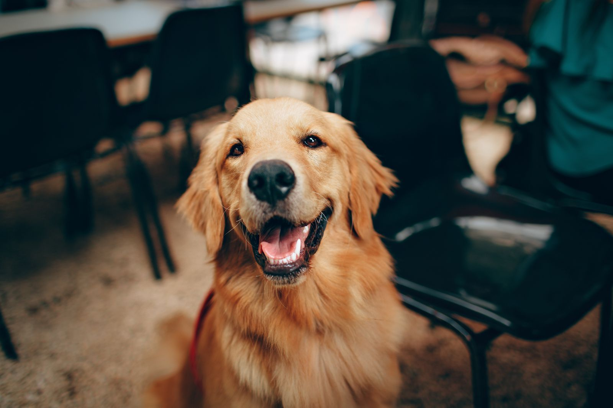

Canine Country Club of Arkansas
Dog boarding and daycare in Roland, on 4.5 acres west of Little Rock.
About
Canine Country Club of Arkansas is a dog boarding and daycare facility at 26807 Goodson Road in Roland, Arkansas, about five minutes west of Chenal Parkway in West Little Rock. This concept covers the Roland location only. The facility sits on 4.5 acres and has been in business for more than 20 years.
Services
Dog boarding
Overnight boarding at the Roland facility.
Doggie daycare
Daycare for dogs during the day.
Spa
Spa services for dogs.
Wellness and training
Wellness and training services.
Bark Bus shuttle
The Bark Bus pet shuttle, Monday to Friday within a 10 mile radius.
4.5 acres, 20 plus years
The Roland facility sits on 4.5 acres, five minutes west of Chenal Parkway, and has served dogs for more than 20 years. Call (501) 868-7297 or email info@cccofar.com to ask about boarding or daycare.
Gallery


All gallery photos are stock photos, labeled as such. They show the kind of work and setting described on this page, not this business.
Visit
Address: 26807 Goodson Rd, Roland, AR 72135
Hours: Monday to Friday 7:30 AM to 6:00 PM, Saturday 8:00 AM to 5:00 PM, Sunday 10:00 AM to 4:00 PM.
Phone: (501) 868-7297
Email: info@cccofar.com
Contact
Call (501) 868-7297 Email info@cccofar.com
Canine Country Club of Arkansas serves Roland, AR. Questions? Call (501) 868-7297.